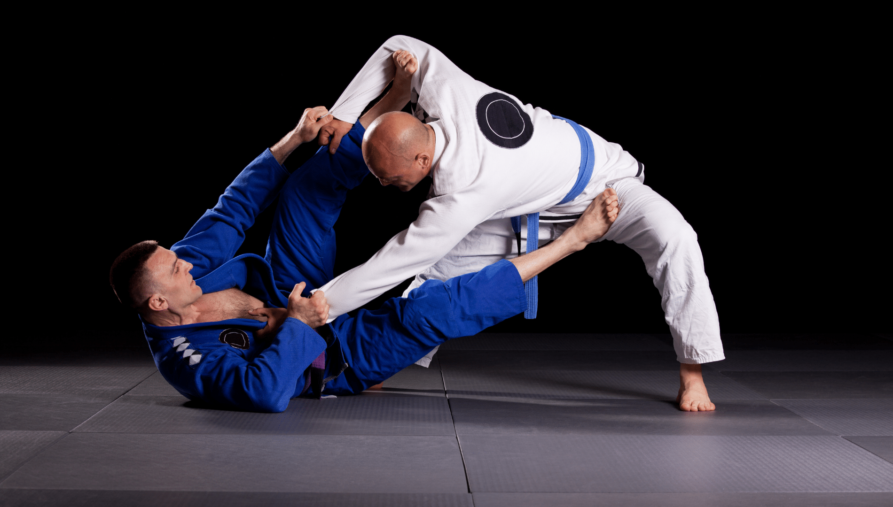
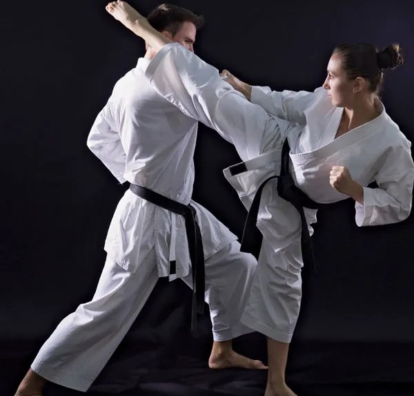

MARTIAL ARTS INFORMATION
DETAILS OF THE DIFFERENT MARTIAL ARTS STYLE
JIU-JITSU
Description of Jiu-jitsu
KARATE
Description of Karate
JUDO
Description of Judo
MUAY THAI
Description of Muay Thai
BENEFITS OF EACH STYLE
JIU-JITSU
Jiu-Jitsu specializes in ground-based combat, teaching invaluable skills for self-defense in close-quarters scenarios. Its emphasis on technique over strength makes it accessible to individuals of various physical abilities. The art's intricate nature hones problem-solving skills and requires patience and precision in execution. Beyond self-defense, Jiu-Jitsu is practiced as a sport with a belt ranking system, fostering camaraderie among its practitioners. It instills mental toughness, builds a sense of community, and contributes to overall physical health and fitness. The techniques learned in Jiu-Jitsu can be effectively applied in real-world self-defense situations.
KARATE
Karate's advantages extend to various aspects of one's life. This martial art equips individuals with practical self-defense techniques and fosters physical fitness, including strength, endurance, and flexibility. Karate enhances mental focus, discipline, and character development, promoting values like respect and self-discipline. Proficiency in Karate techniques contributes to increased self-confidence, and the discipline can be a significant stress-reliever. Additionally, the art often includes the exploration of Japanese culture, participation in tournaments, and personal growth.
JUDO

Judo offers a multifaceted array of benefits, including enhanced physical fitness, the acquisition of effective self-defense skills, and improved balance and coordination. Practitioners gain mental discipline, essential for executing throws and grappling techniques The art instills values such as discipline, respect, and sportsmanship. Moreover, Judo's strategic nature encourages problem-solving skills and cultivates a sense of self-confidence. It provides a robust fitness regimen, aids in stress reduction, and, as an Olympic sport, offers opportunities for international competition.
MUAY THAI

Muay Thai stands out for its relentless striking skills and powerful physical conditioning benefits. It cultivates mental toughness, making practitioners resilient both inside and outside the ring. Renowned for its effectiveness in self-defense, Muay Thai training involves intense cardiovascular workouts and high-intensity techniques. The art also carries a rich cultural heritage from Thailand and offers competitive opportunities. Muay Thai fosters self-confidence and contributes to weight management, all while creating a tight-knit community among its practitioners.